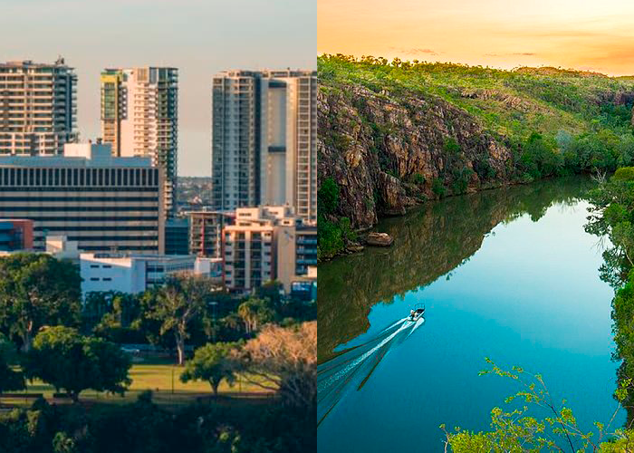

Северная территория

Северная территория — субъект федерации в составе Австралии, на севере материковой части страны, статус чуть более низкий, чем у штата. Граничит с Западной Австралией на западе (по 129-му восточному меридиану), Южной Австралией на юге (по 26-й южной параллели) и Квинслендом на востоке (по 138-му восточному меридиану), включает в себя Землю Александры (название дано в 1862 году). С севера территория омывается Тиморским морем, Арафурским морем и заливом Карпентария. Обладая большой площадью (более 1 347 791 км², третья среди австралийских административно-территориальных единиц), территория редко заселена. Численность населения составляет 232 605 человек(2023), что является наименьшим среди восьми крупных австралийских штатов и территорий.